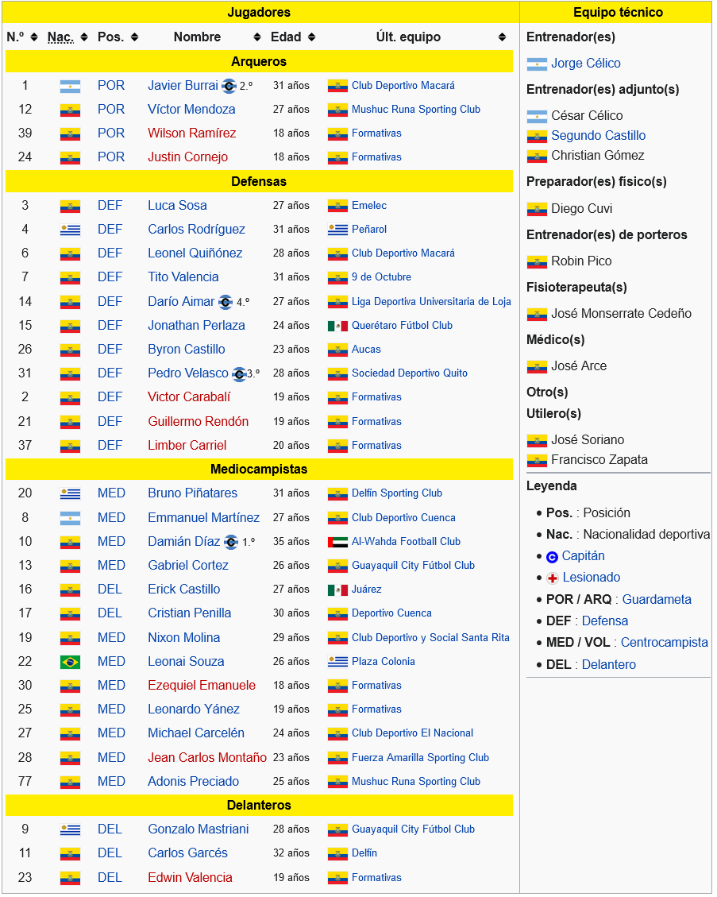

- Grupo A
- Grupo B
- Grupo C
- Grupo D
Barcelona Sporting Club Barcelona Sporting Club es un club deportivo ecuatoriano, originario de la ciudad de Guayaquil, fundado el 1 de mayo de 1925.6 Su principal disciplina es el fútbol, en el que es parte de la Serie A de Ecuador desde 1957 y, a partir de 1965, es el único club que ha disputado todas las temporadas desde el comienzo del profesionalismo en 1957.7 Ha obtenido dieciséis títulos nacionales en esta disciplina, además de cinco títulos provinciales y uno amateur. Posee el Estadio Monumental Isidro Romero Carbo, el cual tiene una capacidad de 57 267 personas5 reglamentariamente, aunque en enero de 1998 llegó a su límite de 91 230 personas.8 Este fue inaugurado el 27 de diciembre de 19879 con el nombre de Estadio Monumental de Barcelona Sporting Club y, en 1992, cambió el nombre por el de Estadio Monumental Isidro Romero Carbo. El equipo mantiene una rivalidad futbolística histórica con el Club Sport Emelec, con quien disputa el denominado clásico del Astillero, considerado como el partido de mayor tradición de Ecuador.10 El club, a lo largo de sus 96 años de vida institucional, ha logrado importantes hazañas en su disciplina principal como la victoria contra Millonarios de Bogotá, la hazaña de La Plata ante Estudiantes de La Plata y los subcampeonatos de la Copa Libertadores en 1990 y 1998. También fue el primer equipo en conseguir un bicampeonato del fútbol ecuatoriano (1970-1971). Tuvo en sus filas al deportista Alberto Spencer, quien se consagraría como máximo goleador de la Copa Libertadores.11 Actualmente, es el club con más títulos en el campeonato de fútbol ecuatoriano.12 Además, es el único equipo ecuatoriano que nunca ha descendido de categoría.
